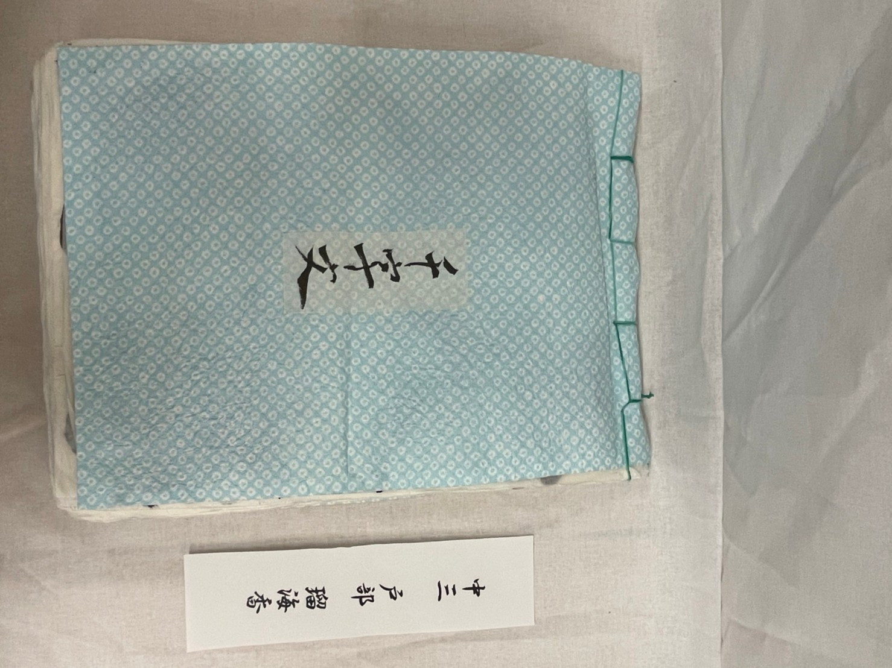
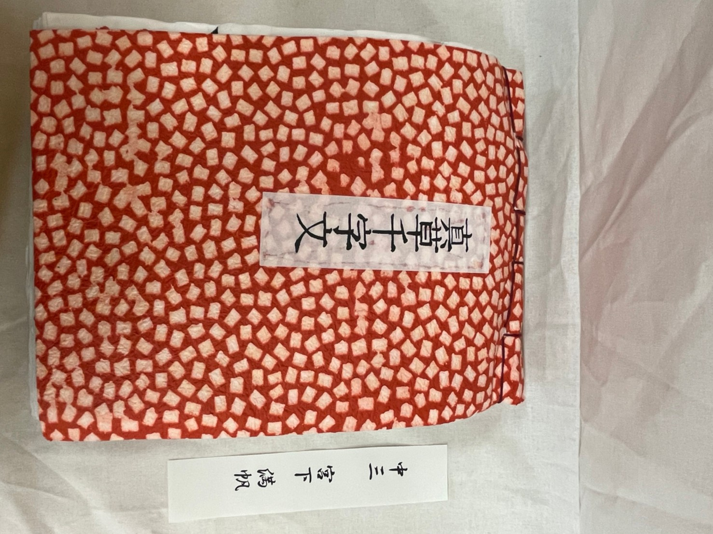
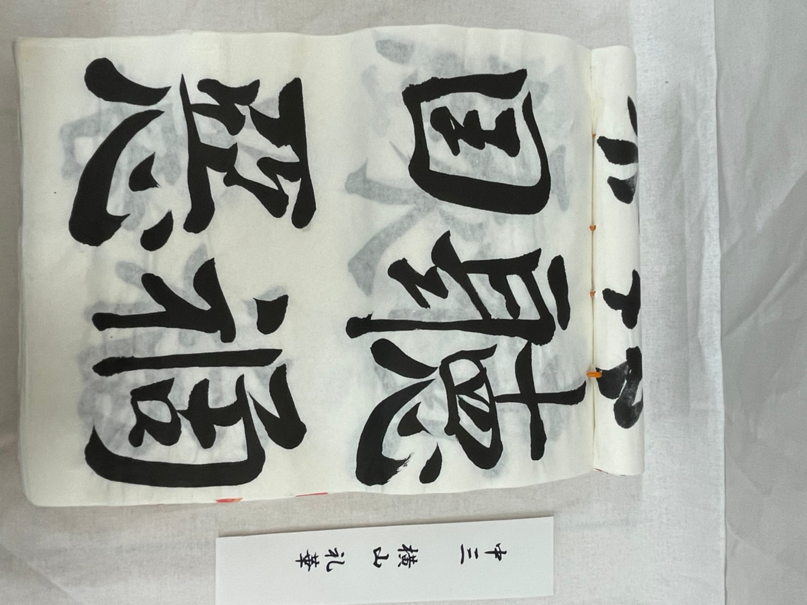
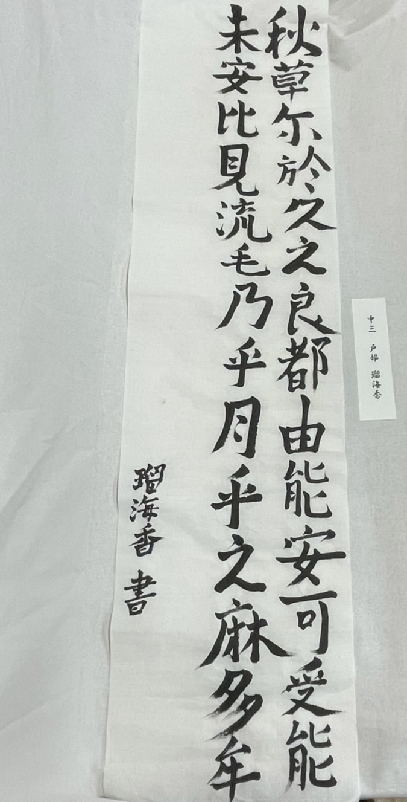

中3の作品
臨書『真草千字文』
真草千字文に書かれている文章は、4字ずつで1句をなす韻文が250句、全部で1000字になり、重複した文字は1字もありません。
千字文は、周興嗣が王羲之の草書から無秩序に引き出された千字を使って、韻文に使ったと伝えられています。
戸部瑠海香
- 

三重野梨那


宮下満帆
- 

横山礼華

- 
創作
戸部瑠海香
- 
私が選んだのは大伴家持が万葉集の中で詠んだ秋の季語が入った短歌です。この歌は一年に一度しかないこの儚い時間を待ち続けてなくてはいけないのをもどかしく思うという意味です。 一年に一度しかないなでしこ祭やその準備期間を少し思わせるような歌かなと思いました。この歌は七夕に詠まれているので、もちろん織姫と彦星を思い浮かべながら詠まれています。 しかし星や空を連想させるような語句はなく7月は旧暦の秋なので秋の季語が入っているので今年のテーマ「春夏秋冬」に合うと思いました。 今回は原文と訓読文を読み比べて原文の字の並びが美しいと感じたので原文で書きました。ひらがなが登場する以前の文章なので今の日本語ではあまり使わない漢字もあり万葉集らしい雰囲気を感じられると思います。
三重野梨那

意味: 冬が過ぎて春が来れば、年月は新しくなるけれど、人は古くなってゆきます。
虚しい様な詩なのかなと思っていたんですが、歳を重ねていくからこその美しさがあると言っているようで、とても印象に残ったので選びました。
宮下満帆

夏はセミや小さな子たちが夕方まで楽しく遊んでいるが秋になるとすぐに暗くなってしまい寂しい気持ちになるから。